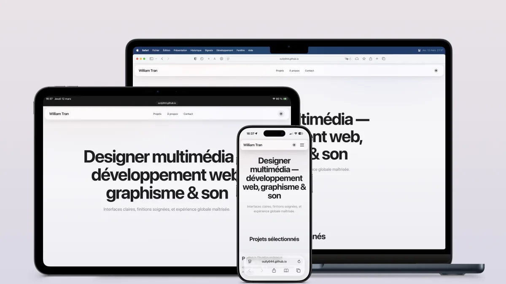
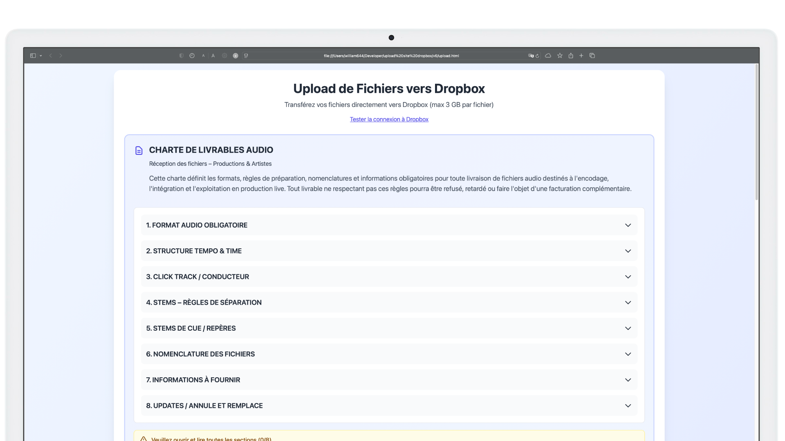

Tous les projets
Cette page présente une sélection de projets en produits & interfaces, identité visuelle & UI et audiovisuel.
Aucun projet ne correspond aux tags sélectionnés.
VeloTrack - Application iOS de suivi cycliste
Projet personnel · Application mobile iOS · 2026
Sonumen - Lecteur musical iOS
Projet personnel · Application mobile iOS · 2026

Portfolio - Conception & développement
Projet personnel · Web design & développement · 2026
Guide studio - Web app mobile first
Playback Solutions · Web app mobile first · 2026

Plateforme de dépôt audio - Web app sécurisée
Playback Solutions · Plateforme web sécurisée · 2026

Feuille Blanche - Montage vidéo
Feuille Blanche · Montage vidéo · 2025

Les JO : le chaos dans Paris - Fiction sonore
Studio M · Fiction sonore · 2024

Coco & Co Prod - Montage son d'interview
Coco & Co Prod · Podcast interview · 2024

Super Metroid - Création de custom sprites
Projet personnel · Pixel art & game modding · 2024
Suivea - Refonte logo & interface mobile
Docaposte · Identité visuelle & interface mobile · 2021
Suivea v3 - Développement front-end
Docaposte · Développement web · 2021